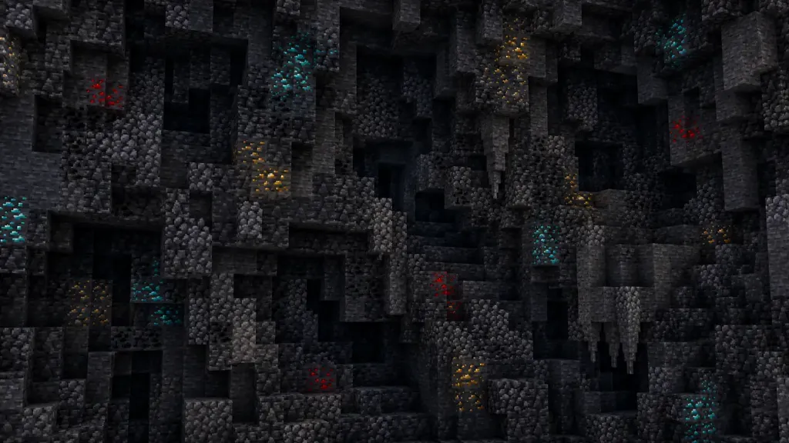
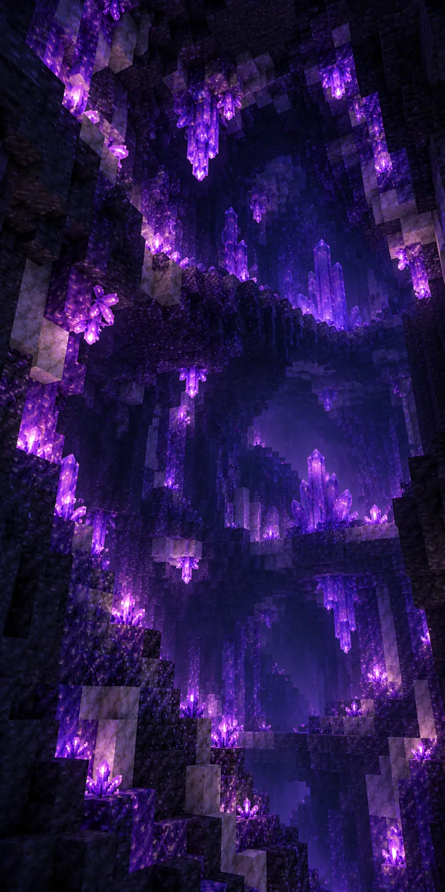
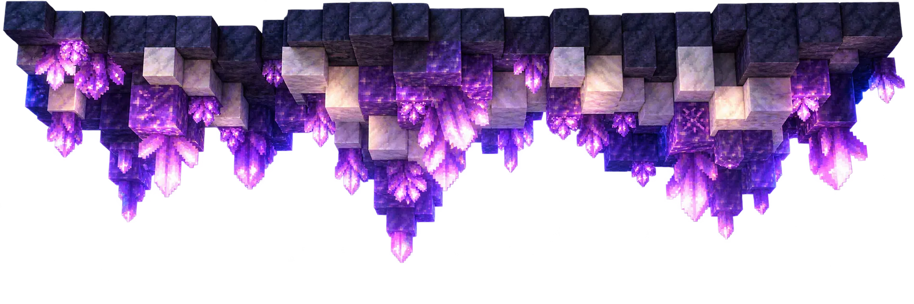
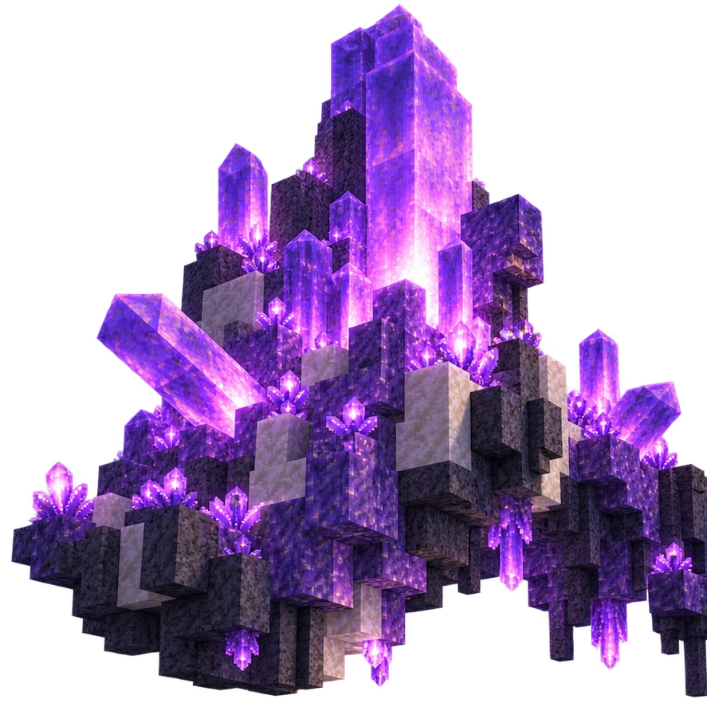
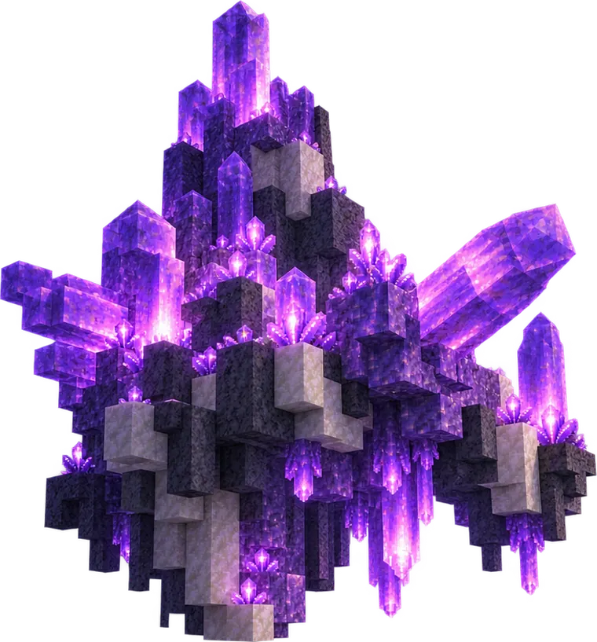
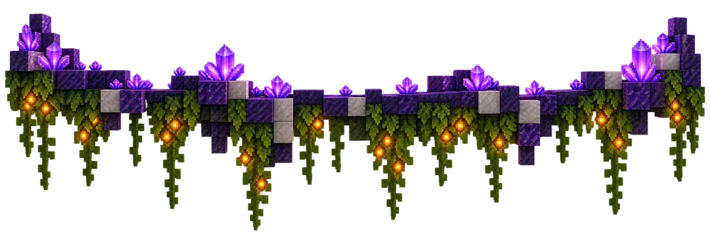

SUSTAIN-IQ 2026 is a 24-hour national-level multidisciplinary sustainability hackathon organized by the Innovators & Visionaries Club (IVC) at Vidyavardhaka College of Engineering, Mysuru, in collaboration with inunity. Unite with 80 finalist teams across 4 challenge domains to engineer practical, measurable solutions for people and the planet.







